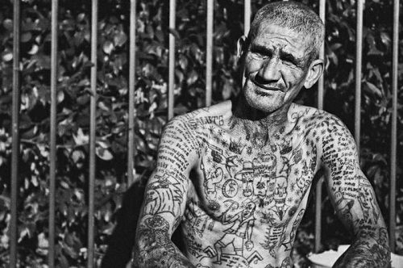

Двадесетосмице су сексуални преступници, имају секусалне односе или су силовани у банди. Подељени су на Златну линију (Тhe Gold Line). Сребрну линију (The Silver Line) и на Трећу дивизију.
Златна линија (The Gold Line)
Они су крвава линија. Чланови постају тако што ножем убадају чуваре у затвору.
Краљ (The Lord)- председава високом командом војног крила затвора 28-ице
Војно крило (The Military Wing)
1.Судија
он изриче све смртне казне члановима и нечлановима и има задатак да их надмудри. На десном рамену има седам звездица за које каже да су златне и седам на левом за које каже да су сребрне
2.Генерал
способан да изда оружје, објави рат и осигура да се неправда која је почињена исправи. Војник може бити унапређен на овај чин само ако је крволочан. Генерал има на оба рамена по шест звездица, на десном златне, а на левом сребрне.
3.Пуковник
он зна и разуме све законе у банди 28-ица. Не поседује оружје. Издаје чинове и казне припадницима 28-ице. Има по четири звездице на оба рамена, такође на десном злате, а на левом сребрне.
4.Бежични оператор
изабран је због изузетне меморије, па је због тога он ,,очи и уши бандe“ и мора бити упућен у све што се дешава поготово са 26-ицама и 27-ицама. Такође пријављује проблеме са затворском храном. Он има по три звездице на оба рамена.
5.Поручник
он контролише проток информација до виших чланова и обих нижих и на тај начин повезује први одсек са војницима и осталим лицима. Такође стучњак је за историју банде и тестира нове регруте из банде 28-ице.
Сребрна линија (The Silver Line)
Ова група такође је позната као женска линија односно вифије. Намењена је за оне чланове које пружају сексуалне услуге на команду Златне линије
Прво одељење
1. Генерални гувернер
познаје све законе и прописе о уставу банде и дели законе. Одговоран је за издавање залиха дувана. На раменима има седам златних и седам сребрних звездица.
2. Доктор
има по шест звездица. Он за задатак има да испита прњаву историју придошлица банде подразумевајући и тетоваже које већ имају на телу. Задужен је за било каква медицинска питања, чак ће и окусити храну да провери да ли је отрована или не. Што је најважније он одлучује да ли ће срце новог регрута куцати два или три пута годишње. Два откуцаја означавала су жену, а три мушкарца.
3. Инспектор
поред шест истетовираних звездица налази се и број 28. Он је задужен за образовање чланова банде о њеној митологији и тражи нове регруте у затвору. Он може да разговара са свим члановима банде и са чуварима, и он мора бити обавештен да ли члан банде жели да разговара са чуваром.
4. Службеник
он је секретар и књиговођа 28-ица
5. Магистрат
када постоје било какви проблеми у банди, или ван ње, он одлучује о решавању ситуације. Одлучује да ли се слуучај може одбацити, да ли је потребна крв или смртна казна.
6. Јавни тужилац
има по две звездице на раменима. Има улогу посредника и осигурава са се вифије не упуштају у сексуалне односе..
Друго одељење
1. Голијат 1
он је главна ,,жена“. Може да уђе у било чију ћелију 28-ица и има сексуални однос са било ким. За то му није потребна никаква дозвола од поручника Златне линије. Када се изрекне смртна казна, голијат је тај који плеше наг, испуњавајући пожудним мислима људе који доносе смртну казну, па се она може променити у групно силовање. Голијата обично бирају по младости и добром изгледу.
2. Голијат 2
контролише га поручник Златне линије.
3. Сребрни 1
његова улога је да изрази неодобравање неуспешних у банди, а њега контролише Бежични Оператор из Златне линије и одговоран је за њега и његове поступке..
4. Сребрни 2
он не чини никаква крвава дела нити се бори. Он бележи број пробних радника и школује их за различите групе у банди. Такође он осигурава да сви пробати поштују правила банде.
Пробати (The Probationers)

Они имају најжи ранг у приватној линији (прилог бр.5). Када носе кошуљу или јакну груди им увек морају бити откривене, што означава да су увек доступни за секс. Имају тетоважу Молива Бои-а, што показује њихов положај сексуалних робова. Они се никад не боре.
Трећа дивизија (The Third Division)
Ову групу чине борбени војници златне линије. Ови чланови не смеју имати било какве сексуалне активности и не смеју имати никакав контакт са Сребрном линијом или ,,вифијама“.
Подела:
1. Капетан 1
понаша се као капетан војника. Добија наређења од поручника Златне линије. Такође је у позицији да може да дисциплинује чланове због лакших прекршаја.
2. Капетан 2
мора да познаје све законе 28-ице, али не може да изриче казне
3. Наредник 1
подучава нове чланове законима и традицијом 28-ице. Такође осигурава да ниједан војник не постане корумпиран или да се понаша онако како не би требало
.
4. Наредник 2
чува дуван за вифије и додењује задатке новим члановима банде.